Wattsworth
A home battery that runs itself, and explains itself. I designed and built a hosted service that re-plans a solar battery every 30 minutes against live prices, the weather and the household’s habits, then reports back in plain English, like a butler who never oversells his work.
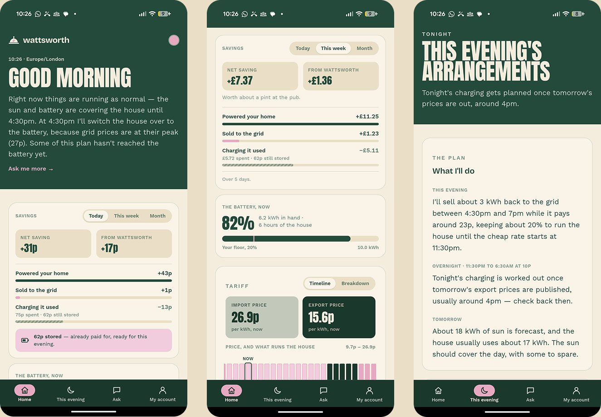
People buy a home battery to save money, then leave it on a timer they set once.
With solar panels, a battery and a tariff where the price changes every half hour, the saving comes from timing: charge when power is cheap or clean, run the house from the battery when it’s dear, sell back at the evening peak. Doing that by hand means checking prices every day and re-setting timers in an app. Almost nobody keeps it up.
The tools that do it for you assume a technical owner. The inverter’s own scheduler plans one day at a time and has to be resubmitted every midnight. The capable optimisers need a self-hosted smart-home server. And none of them tell you, in words a normal person would use, what they did with your battery and whether it paid.
“Most people set it once and leave it, and lose money as a result.”
Before designing a screen, I mapped what the battery would let me do and where the market left people stranded.
I started with the constraints. I read the FoxESS Cloud API end to end to learn what could actually be controlled (timed charge, discharge and sell segments, plus a minimum battery level), and its limits: about 1,440 calls per inverter per day, and writes that take up to a minute to land. That shaped everything that followed: plan often, write rarely.
Then I audited every product doing this job, down to a full dossier on the closest competitor. The gaps were consistent:
Hand the battery over completely, and still trust what it’s doing.
I set the bar as a set of promises the product had to keep, not features to ship:
A butler for your battery: does the work quietly, reports back plainly.
Wattsworth runs on its own servers, around the clock. Every 30 minutes it combines tomorrow’s and today’s prices, a solar forecast for the roof, the home’s learned usage pattern and the battery’s current charge into a plan for the next day or two, and writes it to the inverter. Each evening it makes the call people care about most: how much to charge overnight, judged against tomorrow’s sun.
The butler gave the product its voice. Plans became “This evening’s arrangements”, savings became “the month’s accounts”, and the interface talks in sentences rather than settings. Above it sits Ask, a conversational layer that knows the tariff, the battery and every decision made. It is deliberately read-only for now: he never changes anything without asking first.
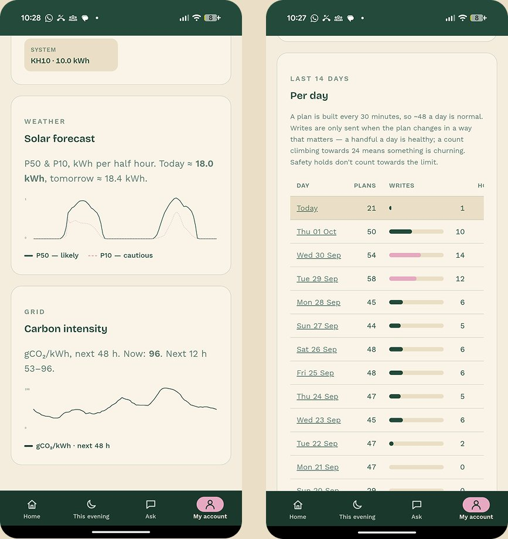
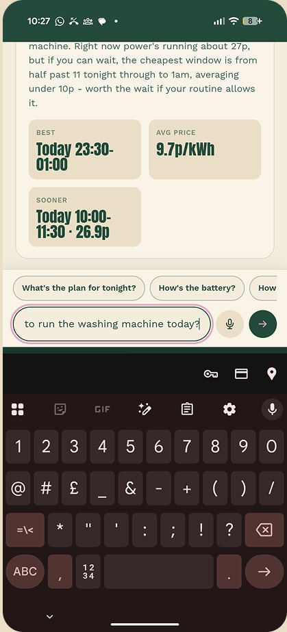
Two colours, a paper, and three typefaces: a refined butler, not another tech-green energy app.
I built the brand and the digital system together so the app, landing page, emails and social posts would share one voice. Green and pink do the work and paper holds it together, roughly 60% paper, 30% green, 10% pink, with every text pairing checked for AA contrast. Anton shouts the headlines, Bricolage Grotesque carries the wordmark and UI, and Work Sans does the reading. The butler illustration appears once per page, and never inside the product UI.
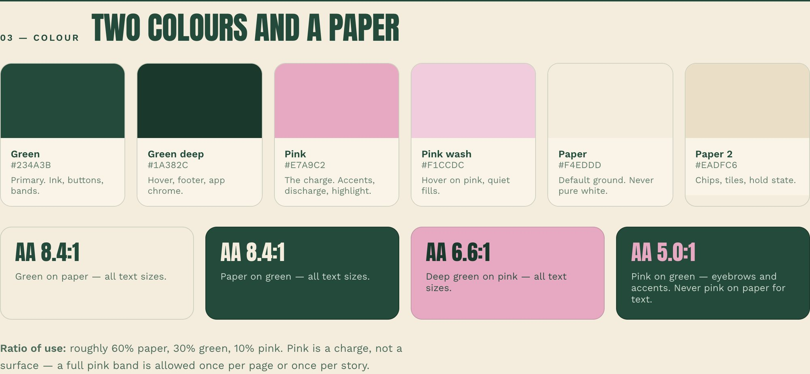
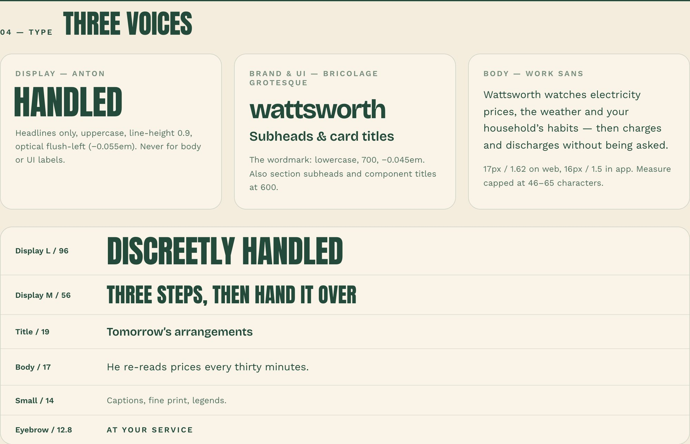
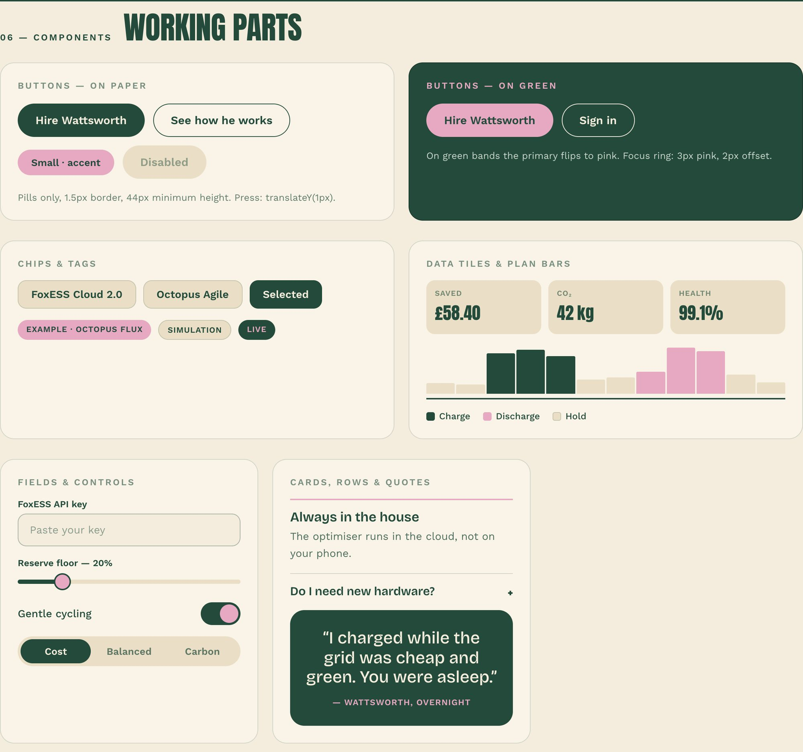
I designed how he talks before what he says: files a report, doesn’t chat.
I explored three ways to hold a conversation: a familiar bubble thread, a timestamped house log, and a card feed. Bubbles cramped the charts and numbers that answers depend on, and the log read beautifully but felt least like something you could talk to. The card feed won: full-width paper cards he files, with your questions in green pills and a standing “now / next” strip so you know the state of play without asking.
The harder design work was behaviour. I wrote scenarios for the moments trust is won or lost: impatience (“I need the dishwasher on now”), silence (what happens if you never reply), and being wrong, where he shows what he predicted, what happened, what it cost and what he has changed, with no apology paragraph.
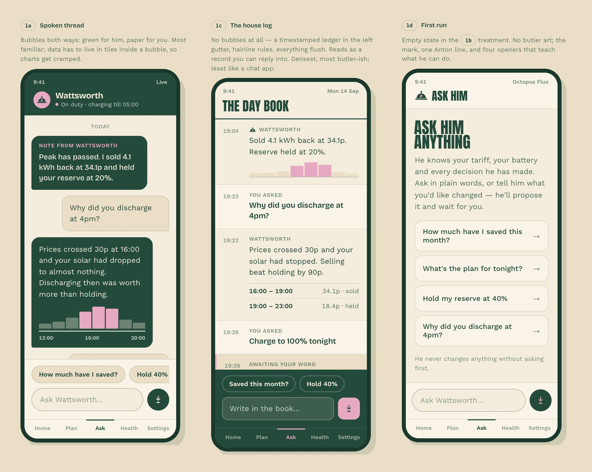
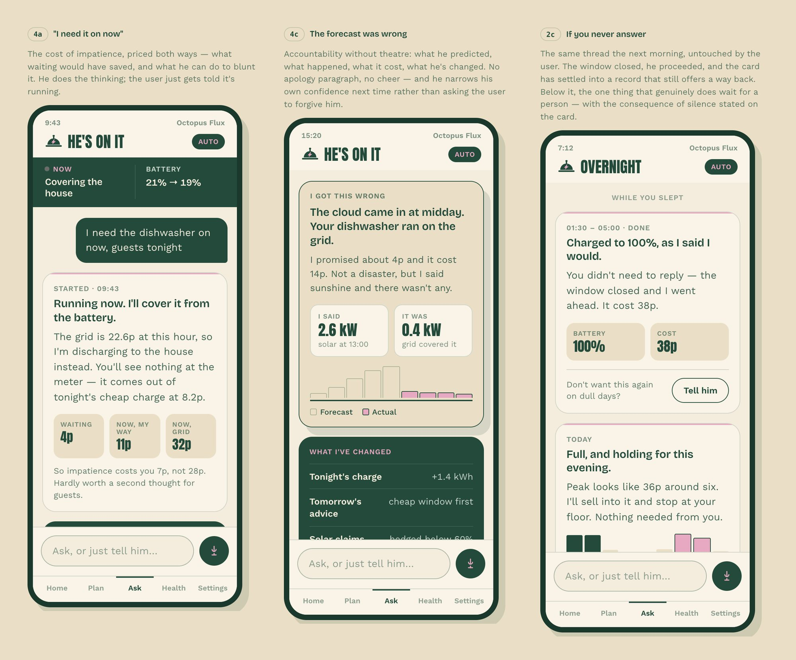
Putting an AI model in front of real money needed guardrails, so I designed them into the system rather than the copy. Every sentence has a fixed-wording fallback. The model is only asked again when the facts change. Any number it writes must appear in the underlying data or the sentence is rejected, and rejected drafts are kept as an audit trail.
Motion that tells you what the battery is doing before you read a word.
The latest round gave the butler a body. I drew him, his props and every money object as pixel art from the brand palette, so the whole family could be built in code from a few lines of characters, and gave each moment of the day its own hero. When he sells, pixel coins rise beside him and the money figure turns pink. In the evening the green deepens, a candle flickers and tonight’s plan arrives as one card. On Ask, a question mark bobs while he types, then three suggestions rise above the text box.
The rule throughout: every animation reports a real state. Nothing moves for decoration. The speech bubble types out his words because he is speaking, the status dot pulses faster while money is moving, and there is one way to change his mind, never a stop button.
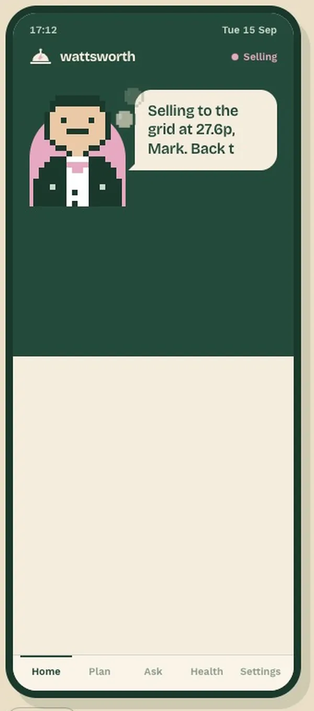
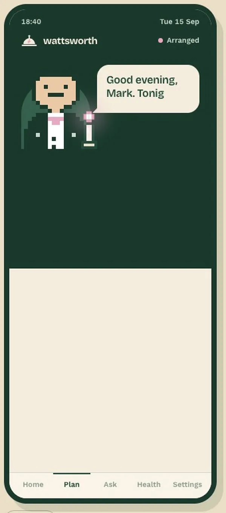
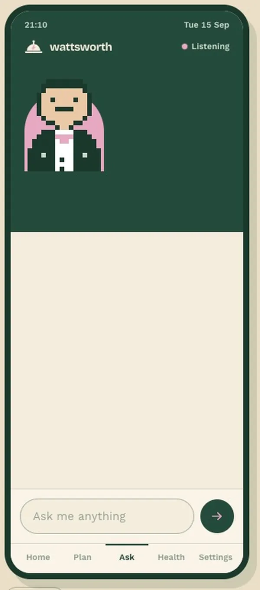
The same thinking runs through the smaller components. The battery level became a pixel battery: ten chunky cells that light one after another on load, with the last one blinking while it drains. I explored three directions for the tariff card, each answering the same question at a glance: what is running my house at this price? One makes bar height the price and colour the source, one splits them into a stepped price line over a source strip, and one swaps the chart for his own words: what the price is now, and what he will do in each window for the rest of the day.
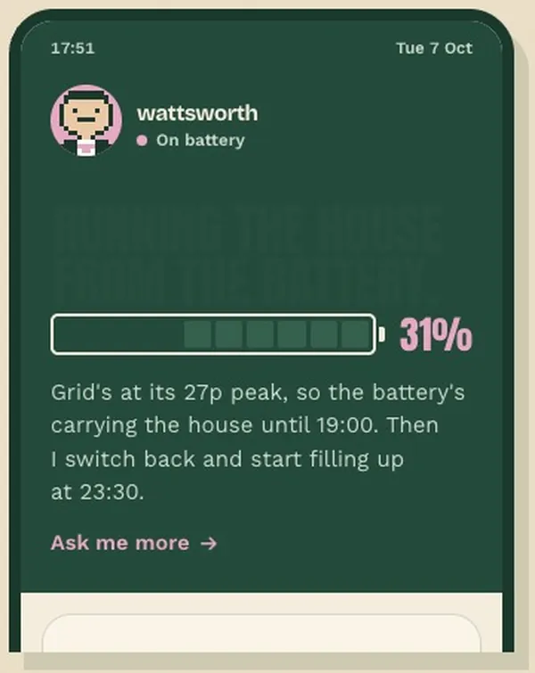
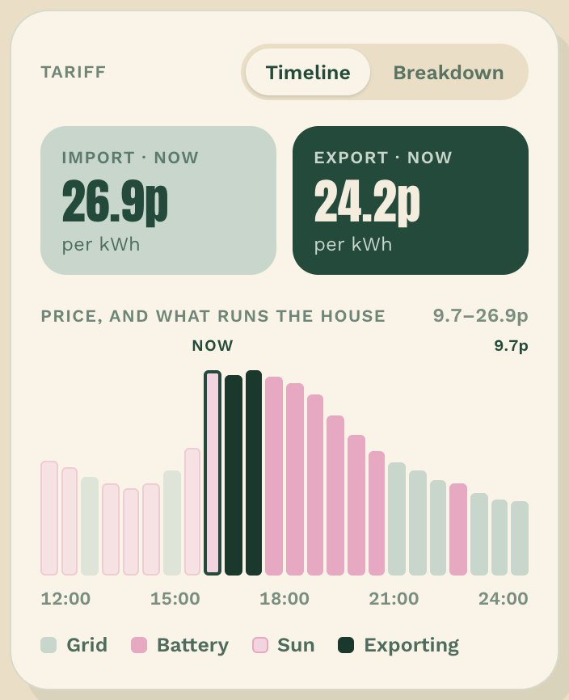
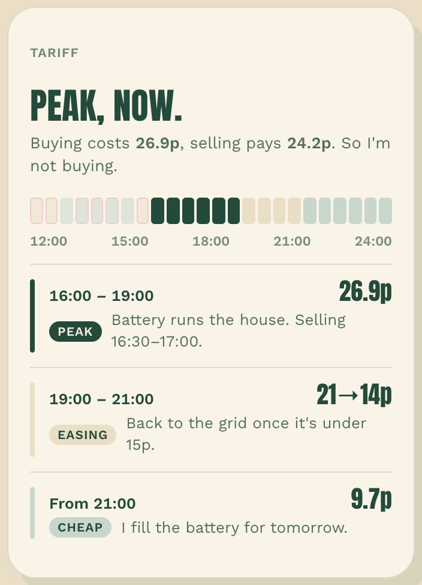
Small numbers, honestly counted, from one real home.
Wattsworth has run a real battery in my own home since 12 September 2026. Over the first 30 days, the battery saved £42.55 against having no battery at all. Of that, £8.71 came from Wattsworth’s timing over the battery’s built-in mode, after pricing every extra kWh of battery wear. It came out ahead on 28 of the 30 days, and it is improving: the last fortnight averaged about 48p a day, against roughly 95p a day that perfect hindsight could have earned. It isn’t a big number yet, and I chose to show it that way.
Running on real data mattered more than any test. It surfaced problems no simulation would have: the system had been pricing on the wrong tariff, the solar forecast ran two to five times too low because the panels face two directions, and the battery’s own sensors overstated its discharge, inflating the savings. I fixed each one and re-priced the history. In its first weeks Wattsworth also cycled the battery about 49% more than its built-in mode, so it now spends that wear only when it pays and never claims to protect battery health.
Next: closing the gap to that ceiling through winter, when a heat pump nearly doubles the home’s demand, and inviting a second household, with onboarding already built for it.
“The hardest design question wasn’t a screen. It was deciding what counts as a win, and saying so when it isn’t one.”